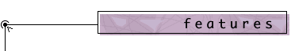
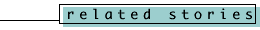

|  Backstage at General Synod 1998 How We're Bringing Live Coverage to You It's one of the largest communications undertakings ever in the Anglican Church of Canada. Three TV cameras, a live web site, an Internet email newswire, and more than a dozen staff members are all coordinating to bring you the sights and sounds of General Synod. The features below include details and photos from on-site at General Synod. Select a feature:  |